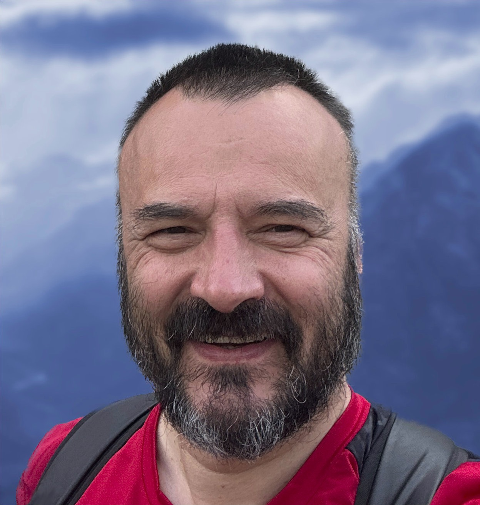

Full-Stack Development & AI-Native Engineering
Senior engineer with a decade of technical leadership at Hughes Network Systems, building agentic AI systems daily with Claude Code and Cursor — backed by 30 years shipping production software.

For the last decade I've been a senior engineer and technical lead at Hughes Network Systems — architecting systems, reviewing code, and mentoring more than ten engineers, several of whom were promoted into senior roles. I've also driven company-wide adoption of AI agentic programming there — the only engineer championing it in my group, with influence reaching across the organization, contributing to a roughly 10x productivity increase for the teams that adopted it. That sits at the top of 30 years writing production software: Ruby on Rails, Angular, React, TypeScript, Node.js, and AWS, mostly at scale inside established engineering teams.
Alongside that, I build agentic AI systems by hand: a security architecture for swarm robotics, a SaaS app shipped end-to-end with Claude Code and Cursor, and generative-AI pipelines trained on custom models. I didn't pick up AI tools last year — I've been building and teaching agentic workflows to a technical audience for years.
Independent engineering work, built and shipped outside of day-job employment.
29 repositories, 850+ stars on GitHub →
Alongside full-time engineering roles, I've spent 20 years building a technical education platform: 3,000+ tutorials, a YouTube audience of 96,000+ across two channels, and community platforms including a Discord server and a local Adobe user group.
It runs largely on its own at this point — a body of work I maintain, not a daily time commitment that competes with a full-time role.